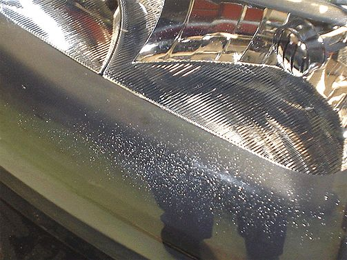
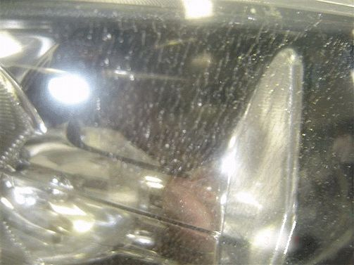

Lighting - Exterior Lamp Condensation and Replacement
INFORMATIONBulletin No.: 01-08-42-001H
Date: January 05, 2011
Subject: Exterior Lamp Condensation and Replacement Guidelines
Models:
2011 and Prior GM Passenger Cars and Trucks (including Saturn)
Supercede:
This bulletin is being revised to add the 2011 model year. Please discard Corporate Bulletin Number 01-08-42-001G (Section 08 - Body and Accessories).
The following information is being provided to better define the causes of condensation in exterior lamps and includes guidelines for determining the difference between a lamp with a normal atmospheric condition (condensation) and a lamp with a water leak.
Some exterior lamps, such as cornering, turn signal, backup, headlamps or tail lamps may exhibit very small droplets of water, a fine mist or white fog (condensation) on the inside of the lamp lens. This may be more noticeable on lamps with "multi-lens" designs and may be normal during certain weather conditions.
Condensation occurs when the air inside the lamp assembly, through atmospheric changes, reaches the "dew point". When this takes place, the moisture in the air within the lamp assembly condenses, creating a fine mist or white fog on the inside surface of the lamp lens.
Most exterior lamps on General Motors vehicles use a vented design and feature a replaceable bulb assembly. They are designed to remove any accumulated moisture vapor by expelling it through a vent system. The vent system operates at all times, however, it is most effective when the lamps are ON or when the vehicle is in motion. Depending on the size, shape and location of the lamp on the vehicle, and the atmospheric conditions occurring, the amount of time required to clear the lamp may vary from 2 to 6 hours.
Completely sealed headlamp assemblies (sealed beams) are still used on a limited number of models being manufactured today. These lamps require the replacement of the complete lamp assembly if a bulb filament burns out.
Condensation
2006 TrailBlazer Shown

A Fine Mist or White Fog on the Inside Surface of the Lamp Lens Occurring After a Period of High Humidity
- May be located primarily in the lens corners (near the vents) and SHOULD NOT cover more than half the lens surface.
- The condition should clear of moisture when the vehicle is parked in a dry environment, or when the vehicle is driven with the lights ON.
- A comparison of the equivalent lamp on the opposing side of the vehicle indicates a SIMILAR performance.
If the above conditions are noted, the customer should be advised that replacement of a lamp assembly may not correct this condition.
Water Leak
New Style Pickup Shown

Numerous & Various Size Drops of Water Collecting on the Inside Surface of the Lamp Lens After the Vehicle Has Been Exposed to Rain or a Car Washing Environment
- A condition that covers more than half the surface of the lamp lens.
- An accumulation of water in the bottom of the lamp assembly.
- A condition that WON'T clear when the vehicle is parked in a dry environment, or when the vehicle is driven with the lights ON.
- A comparison of the equivalent lamp on the opposing side of the vehicle indicates a different performance.
Any of the above conditions would indicate the need to service the lens or lamp assembly.

Disclaimer